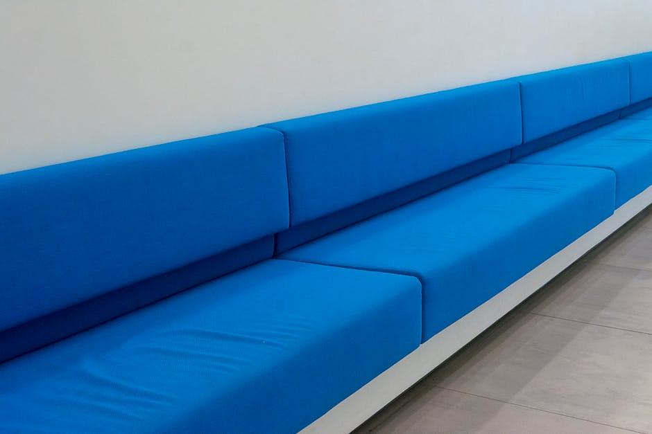
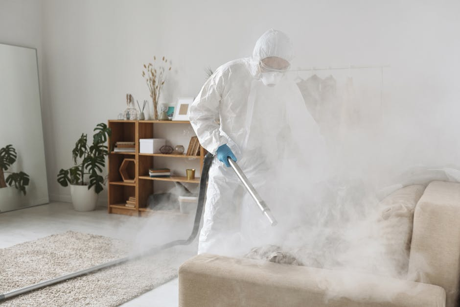

Restoring the foundation of your living spaces.
Professional carpet, rug, and upholstery cleaning services designed to breathe new life into your home. Experience deep cleaning that removes years of wear and stubborn stains.

Dedicated to the details of your home's textiles.
At Cubatory Works, we understand that your carpets and furniture are significant investments that require specialized attention. We focus on comprehensive carpet cleaning and upholstery care that goes far beyond surface appearances.
Our meticulous methods reach deep into fibers to extract embedded dirt, allergens, and hidden debris, promoting a healthier indoor environment for your family. Whether you require delicate rug cleaning or robust, targeted stain removal, our primary goal is extending the lifespan and enhancing the natural beauty of your household textiles.
Client Experiences
Hear from those who have refreshed their spaces.
"Our living room sofa looks brand new after their upholstery cleaning service. The team was punctual, highly professional, and respectful of our home."
Sarah M.
2026
"I thought the stubborn wine stain on our vintage rug was permanent, but their specialized stain removal process completely erased it. Highly recommend their expertise!"
James T.
2026
"Regular steam cleaning by this crew has kept our high-traffic office carpets looking pristine and smelling fresh. Excellent and reliable service every single time."
Emily R.
2026
Core Services
Targeted treatments designed to restore the integrity and appearance of your fabrics.

Deep Carpet Cleaning
Utilizing advanced steam cleaning techniques, we extract embedded dirt, allergens, and dust mites from the base of your carpets. Our process leaves your flooring fresh, soft, and revitalized without leaving sticky residues behind.

Targeted Stain Removal
From accidental spills to stubborn pet spots, our targeted stain removal treatments break down complex chemical bonds. We tackle the most resilient blemishes safely to restore the visual harmony of your textiles.

Upholstery & Rug Care
We safely clean all types of fabrics, removing body oils and atmospheric soils from your sofas and chairs. Our specialized rug cleaning respects delicate dyes and weaves, ensuring heirlooms are treated with care.
Common Questions
Information about our cleaning processes.
How often should I schedule professional carpet cleaning?
For most residential spaces, we recommend professional carpet cleaning every 12 to 18 months. However, homes with indoor pets, young children, or exceptionally high foot traffic may benefit from a deep cleaning every 6 to 8 months to maintain optimal appearance and indoor hygiene.
Is your upholstery cleaning safe for delicate fabrics?
Yes, our upholstery cleaning methods are carefully tailored to the specific fabric type. We conduct a thorough assessment of your furniture beforehand to ensure we utilize the safest and most effective cleaning solutions, especially for sensitive materials like silk, linen, or natural cotton blends.
Can you guarantee complete stain removal?
While our advanced stain removal techniques are highly successful on a wide variety of spots, some harsh substances can permanently alter the dye structure of the fibers. We will evaluate the stain during our initial inspection and provide a realistic expectation of the outcome before beginning any work.
What is the difference between steam cleaning and dry cleaning?
Steam cleaning, also known as hot water extraction, uses pressurized hot water and cleaning agents to flush out deep-seated dirt, which is then immediately extracted. Dry cleaning utilizes low-moisture methods and specialized compounds, allowing for faster drying times but often lacking the deep penetrative power of steam.
How long will it take for my carpets and rugs to dry?
Drying times vary depending on the specific cleaning method used, ambient humidity, and indoor airflow. Generally, carpets cleaned via our thorough steam cleaning process take between 6 to 12 hours to dry completely. We utilize professional-grade extraction equipment to minimize the moisture left behind.
Request a Consultation
Fill out the form below to inquire about our cleaning services and schedule an assessment.